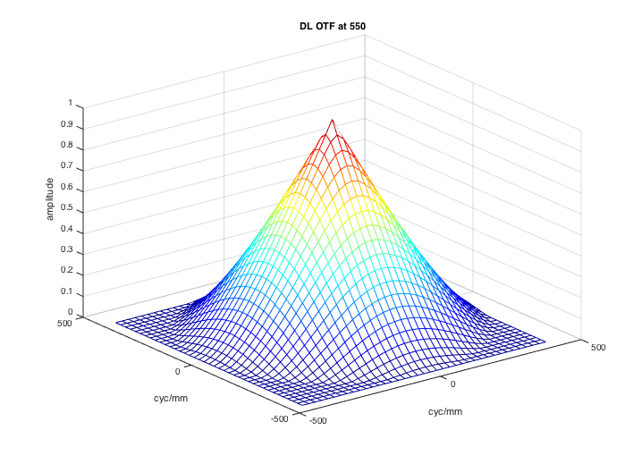
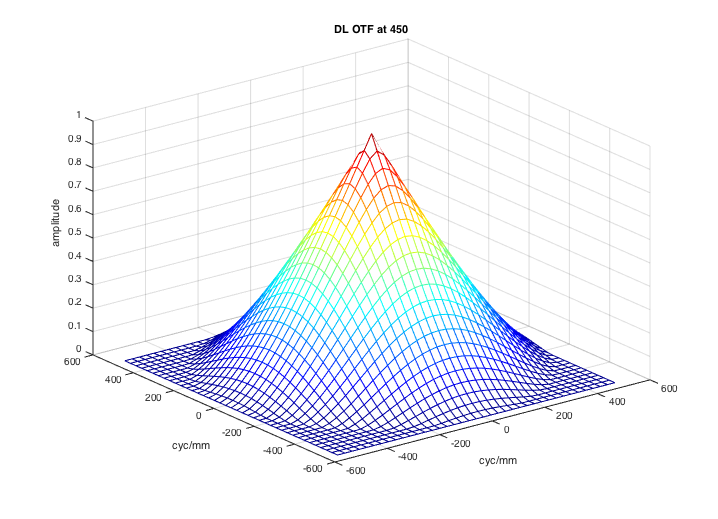
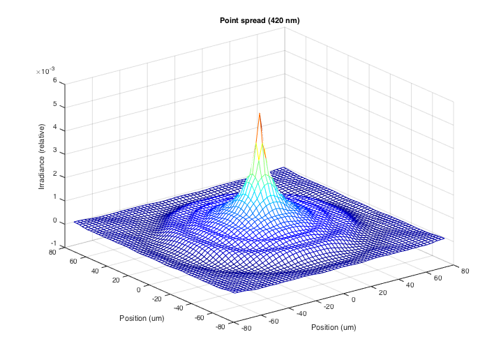
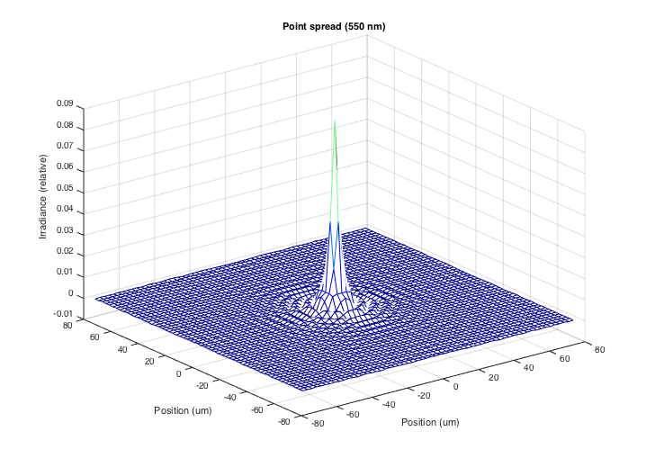
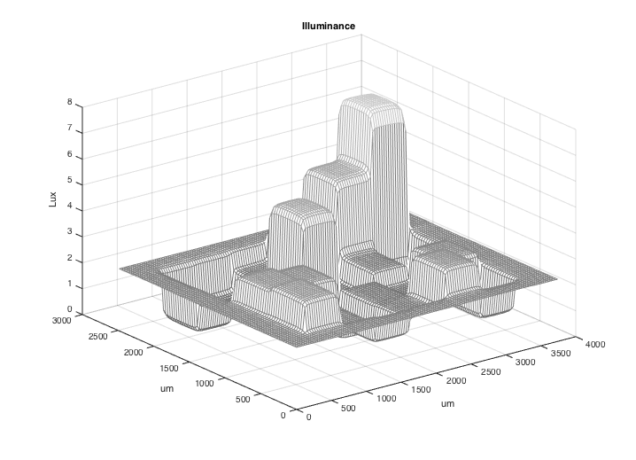
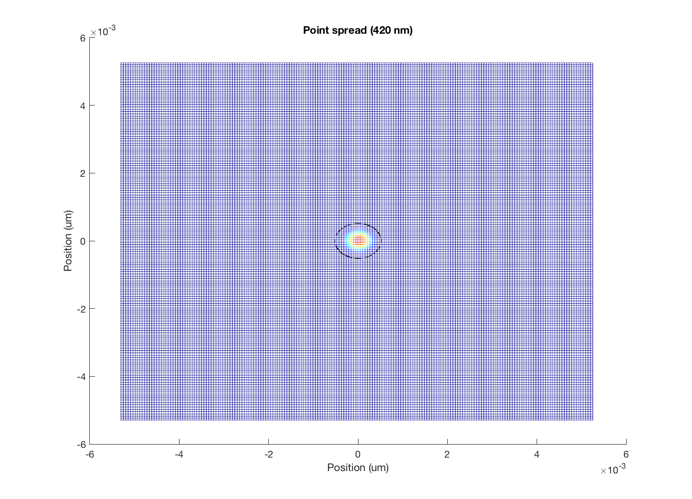
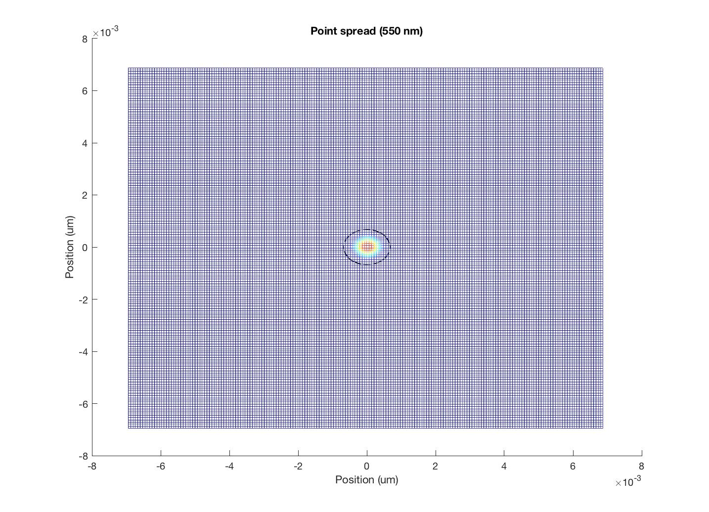
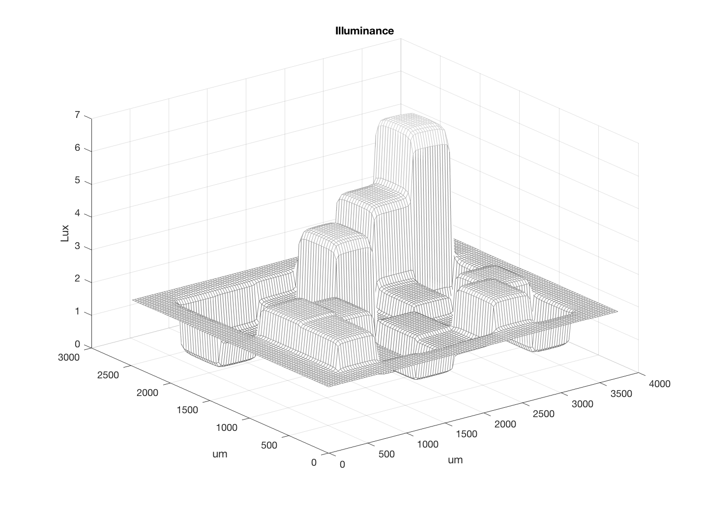

Contents
function varargout = v_oi(varargin)
varargout = UnitTest.runValidationRun(@ValidationFunction, nargout, varargin);
end
Function implementing the isetbio validation code
function ValidationFunction(runTimeParams)
Initialize ISETBIO
ieInit;
Diffraction limited simulation properties
oi = oiCreate('diffraction limited');
if (runTimeParams.generatePlots)
oiPlot(oi,'otf',[],550);
oiPlot(oi,'otf',[],450);
end
UnitTest.validationData('diffractionOI', oi);
 
Human optics (MW)
oi = oiCreate('human');
if (runTimeParams.generatePlots)
oiPlot(oi,'psf',[],420);
oiPlot(oi,'psf',[],550);
end
UnitTest.validationData('humanOI', oi);
Will not round param 'humanOI.optics.lens', which is of class type:'Lens'.
 
Wavefront (Thibos) human optics
oi = oiCreate('wvf human');
if (runTimeParams.generatePlots)
oiPlot(oi,'psf',[],420);
oiPlot(oi,'psf',[],550);
end
UnitTest.validationData('humanWVF', oi);
Will not round param 'humanWVF.optics.lens', which is of class type:'Lens'.


A simple case used for testing
oi = oiCreate('uniform ee');
if (runTimeParams.generatePlots)
oiPlot(oi,'psf',[],420);
oiPlot(oi,'psf',[],550);
end
UnitTest.validationData('EEoi', oi);
 
Make a scene and show some oiGets and oiCompute work
scene = sceneCreate;
oi = oiCreate('human');
oi = oiCompute(oi,scene);
if (runTimeParams.generatePlots)
oiPlot(oi,'illuminance mesh linear');
end
UnitTest.validationData('theScene',scene);
UnitTest.validationData('humanOIFromScene', oi);
Will not round param 'humanOIFromScene.optics.lens', which is of class type:'Lens'.

Check GUI control
if (runTimeParams.generatePlots)
vcAddAndSelectObject(oi);
oiWindow;
oiSet([],'gamma',1);
end

end